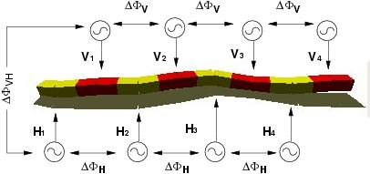
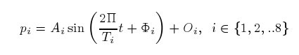
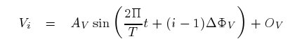
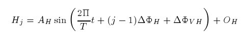

Next: 5 Locomotion capabilities Up: Locomotion Capabilities of a Previous: 2 Control hardware


Next: 5
Locomotion capabilities Up:
Locomotion
Capabilities of a Previous:
2
Control hardware
|
 |
|
Figure: A graphical representation of the control approach. Eight sinusoidal CPGs are used to control the rotation angle of each module. They are divided into two groups: horizontal() and vertical() |
The control of the robot is based on CPGs to produce rhythmic motion. One CPG per module is used to control the variation of the rotation angle.
In our previous work with minimal configuration[16], sinusoidal signals were used for controlling each joint. This simplified CPG produce very smooth movements and has the advantage of making the controller much simpler. Our model of CPG is described by the following equation:
|
 |
(1) |
Where pi is the position angle of the articulation i. For each CPG there are four parameters: the amplitude (Ai) , the period (Ti), the phase (Fi) and the offset (Oi) . As there are eight CPGs, the total number of parameters is 32. In order simplify the study of the locomotion principles, a number of assumptions are applied:
All the modules move with the same period: Ti=T
The modules are divided in two groups: vertical and horizontal modules. There are four joints per group (Vi, Hj with i,j in {1,2,3,4} ).
All the vertical and horizontal modules have the same amplitude Av,Ah , respectively.
All the vertical and horizontal modules have the same offset Ov, Oh respectively
All the vertical and horizontal modules have the same phase difference between two adjacent modules Fv,Fh respectively
Between the vertical and horizontal modules the phase difference is Fhv
All these assumptions mean that
there are two groups of CPGs, one for controlling the pitching
modules and the other for the yawing modules, as shown in Fig.
 .
Therefore, there are only 8 essential parameters for specifying the
gaits: Av, Ah, Fv, Fh, Fhv, Ov, Oh, and T. The equations for these
two groups are now:
.
Therefore, there are only 8 essential parameters for specifying the
gaits: Av, Ah, Fv, Fh, Fhv, Ov, Oh, and T. The equations for these
two groups are now:
|
 |
(2) |
|
 |
(3) |


Next: 5 Locomotion
capabilities Up: Locomotion
Capabilities of a Previous: 2
Control hardware